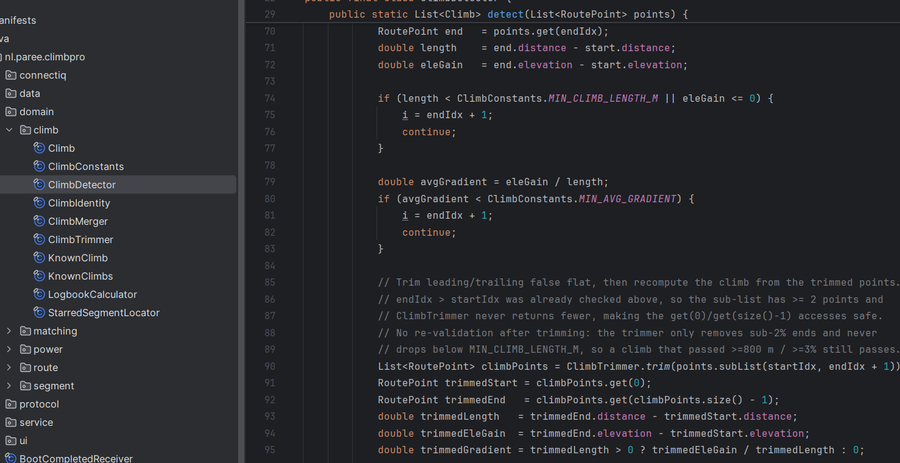

My programming experience
I did not learn to program at school. I learned it by doing.
How it started
After I stopped my study at the TU, I applied for a job at Paree, through someone I knew there. Soon after I started, they gave me a logical problem they had been stuck on. I did not see the answer straight away. So I did what I still do today: break it down and take it step by step, until the problem simply was not there anymore. That was the moment I knew I wanted to do more with software.
What I do now
I still work at Paree, part-time next to my study at the HZ. Paree is an electrical engineering company in industrial automation, with a small software team, and I am part of that team. I write C# to automate internal processes, so my colleagues spend less time on repetitive work. Read more about the company in my post about the ICT field of work.
My own project: a climb app
Because I cycle a lot, I wanted to see the profile of a climb on my watch while I am riding it. So I built it myself. The screenshot below shows part of the Java code that finds the climbs in a route: it walks over the points of the route and checks the length and average gradient of every part that goes up.

The lesson I learned the hard way
I started building the app right away, without thinking about the architecture first. It worked for a while, but every new feature made the code messier, until I could not add anything without breaking something else. In the end I had to start over completely. The second version is split into small parts, like the climb package in the screenshot, and that makes it much easier to keep building on. Now I think about the structure before I write the first line.
How I learn
- Documentation, to understand how something is meant to work
- YouTube, to see how other developers approach a problem
- AI, to get unstuck and to ask why something works
Building this website
HTML was quite easy to get into. CSS was harder: I often had AI generate it for me. For this course I want to change that and really understand the CSS I use, so I can build a layout myself instead of only reading one.